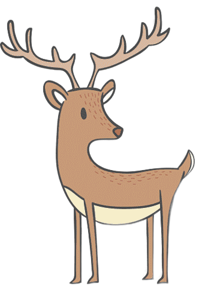
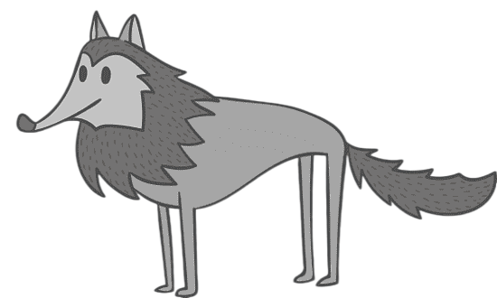

Bears are carnivoran mammals of the family Ursidae. They are classified as caniforms, or doglike carnivorans.
Although only eight species of bears are extant, they are widespread, appearing in a wide variety of habitats throughout most of the Northern Hemisphere and partially in the Southern Hemisphere.
Bears are found on the continents of North America, South America, and Eurasia.
Common characteristics of modern bears include large bodies with stocky legs, long snouts, small rounded ears, shaggy hair, plantigrade paws with five nonretractile claws, and short tails.
Read more...
Forest dwellers
Bear

Deer

A deer or true deer is a hoofed ruminant ungulate of the family Cervidae (informally the deer family).
Cervidae is divided into subfamilies Cervinae (which includes, among others, muntjac, elk (wapiti), red deer, and fallow deer) and Capreolinae (which includes, among others reindeer (caribou), white-tailed deer, roe deer, and moose).
Male deer of almost all species (except the water deer), as well as female reindeer, grow and shed new antlers each year. These antlers are bony extensions of the skull and are often used for combat between males.
Read more...
Read more...
Owl

Owls are birds from the order Strigiformes, which includes over 200 species of mostly solitary and nocturnal birds of prey typified by an upright stance, a large, broad head, binocular vision, binaural hearing, sharp talons, and feathers adapted for silent flight.
Exceptions include the diurnal northern hawk-owl and the gregarious burrowing owl.
Read more...
Read more...
Raccoon
The raccoon, also spelled racoon and sometimes called the common raccoon or northern raccoon to distinguish it from the other species, is a mammal native to North America.
It is the largest of the procyonid family, having a body length of 40 to 70 cm, and a body weight of 5 to 26 kg.
Its grayish coat mostly consists of dense underfur, which insulates it against cold weather.
The animal's most distinctive features include its extremely dexterous front paws, its facial mask, and its ringed tail, which are common themes in the mythologies of the Indigenous peoples of the Americas surrounding the species.
The raccoon is noted for its intelligence, and studies show that it is able to remember the solution to tasks for at least three years.
It is usually nocturnal and omnivorous, eating about 40% invertebrates, 33% plants, and 27% vertebrates.
Read more...
Read more...
Wolf

The wolf, also known as the gray wolf or grey wolf, is a large canine native to Eurasia and North America.
More than thirty subspecies of Canis lupus have been recognized, including the dog and dingo, though gray wolves, as popularly understood, only comprise naturally-occurring wild subspecies.
The wolf is the largest extant member of the family Canidae, and is further distinguished from other Canis species by its less pointed ears and muzzle, as well as a shorter torso and a longer tail.
The wolf is nonetheless related closely enough to smaller Canis species, such as the coyote and the golden jackal, to produce fertile hybrids with them. The wolf's fur is usually mottled white, brown, gray, and black, although subspecies in the arctic region may be nearly all white.
Read more...
Read more...